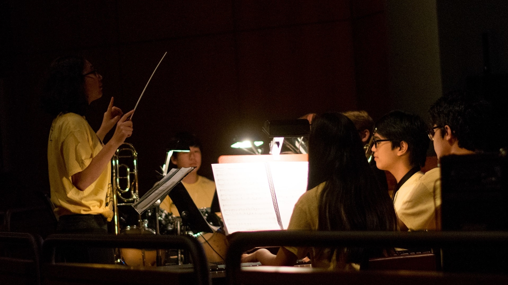
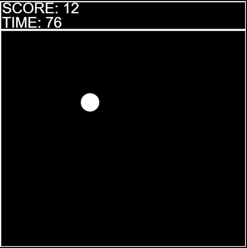

MUSIC
I love music.
I have been a pianist for 11 years and a percussionist for 10 years. As time passed, I grew more and more as a musician. Now I am at a point in which music is one of my absolute favorite things in the world, whether I am listening or making. I've taken this hobby and have made it a passion of mine now. I am now a Music Director in my school's theater community, STC, and the principal percussionist of the NY All-City Concert Band.
STC
All-City
COMPUTER SCIENCE
I love CS.
Hello World! My compuer science journey began in September, 2016. I was a Sophomore and was taking an Intro-Class. That's when I fell in love with computers and coding. I have now taken APCS on top of my Intro-Classes and don't plan to stop anytime soon. I hope to make this my career one day! I have also done a lot of teaching, whether that be at CStuy, or in the CSDojo.
Processing Demo
Chain-Reaction Project

ABOUT
All about me.
My name is Jason Kim and I am now a Rising-Senior in Stuyvesant High School. As you can tell, I am both a musician and a programmer. I have been playing music for around 11 years, and I have been programming for around 2 years.
This website was made as a side-project in the summer of 2018. I wanted to see the process of making a "professional" website, so I decided to take on the challenge of making one for myself. I used resources provided by W3Schools, who have a great template for CSS. This boost really made the process easier. In the future, I plan on making my own CSS template to use.
Below, in the footer, I have placed links for YouTube, FaceBook, Instagram, and GitHub. I haven't uploaded much on the YouTube Channel, but maybe that will change with new music covers. FaceBook is my main method of communication. Instagram is a place for some cool pictures (obviously), and I may start posting some little snippets of music or magic. GitHub is where I hold most of my important projects.
Resume/Experience/Awards
| 12 Years of Piano |
| 11 Years of Percussion |
| 3 Years of CS |
| 100 on NY All-State Snare Drum Exam (Twice!) |
| 4 on AP Music Theory Exam |
| 5 on APCS Exam |
| 4 Years in Stuyvesant Theater Community |
| 2.5 Years Directing Stuyvesant Theater Community |
| 4 Years in NY All-City |
| 3 Years Principal Percussionist in NY All-City |
| 4 Years in Stuyvesant SING! |
| 3 Years Directing Stuyvesant SING! |
| 2 Years as Musical Coordinator in Stuyvesant SING! |
| 1 Year as "Senpai" in CSDojo |
| CStuy Mentor 2018 |
| The Carmine Coppola Music Composition Award 2019 |
| Stuyvesant Symphonic Band Hightest Honor 2019 |
| Max A. Watras Excellence in Music Award 2019 |
| Stuyvesant Honors Physics Award 2019 |